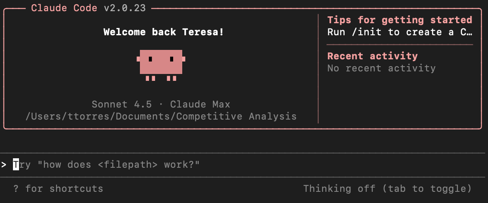

Vibe Coding 入门教程
Vibe Coding（氛围编程）是一种全新的编程范式，我们不需要一行行手写代码，而是用自然语言描述你想要什么，AI 来写代码、我们负责审查和把控方向。
Vibe Coding 教程参考：https://www.runoob.com/vibe-coding/vibe-coding-tutorial.html
什么是 Vibe Coding
Vibe Coding 一词由前特斯拉 AI 总监、OpenAI 联合创始人 Andrej Karpathy 在 2025 年 2 月首次提出。
他用一句话概括了这种全新的编程方式：
「I just vibe. I don't even touch the keyboard sometimes. I just talk to the AI, it writes the code, I review it, and we iterate.」
翻译过来就是：你只管描述你的「感觉」，AI 来写代码，你审查，然后来回迭代。
简单来说，Vibe Coding 就是：你用人话告诉 AI 你想要什么功能，AI 帮你把代码写出来，不需要纠结语法细节、不需要记忆 API 参数、不需要手动调试每一个错误——这些都由 AI 来处理。
我们的角色从「写代码的人」转变为「描述需求的人」，或者说——从程序员变成了产品经理+架构师。

Vibe Coding 不是让 AI 替代你思考，而是让 AI 处理低价值的重复劳动，让你专注于更有创造性的部分：理解问题、设计架构、验证结果。
Vibe Coding vs 传统编程
理解 Vibe Coding 与传统的编程方式有什么不同，有助于你更好地使用它。
| 维度 | 传统编程 | Vibe Coding |
|---|---|---|
| 输入方式 | 逐行手写代码 | 自然语言描述需求 |
| 关注点 | 语法、API、实现细节 | 需求、架构、验证 |
| 调试方式 | 手动断点/日志调试 | 把错误信息丢给 AI，让它修复 |
| 速度 | 取决于打字速度和熟练度 | 取决于需求描述的清晰程度 |
| 适用场景 | 所有编程任务 | 原型开发、CRUD、脚本工具、UI 页面 |
| 核心技能 | 编程语言掌握度 | 需求拆解 + 结果验证能力 |
为什么现在可以 Vibe Coding
Vibe Coding 之所以在 2025 年成为可能，是因为几个关键条件的成熟。
大模型编码能力的飞跃
GPT-5.5、Claude 5、Gemini 等模型在代码生成方面的准确率大幅提升。
它们不仅能写出语法正确的代码，还能理解项目上下文、遵循最佳实践、处理边界情况。
更重要的是，它们可以处理超长上下文——一次性阅读整个项目，理解你的代码库结构。
AI 编程工具的爆发
Cursor、Claude Code、GitHub Copilot、Windsurf 等工具将 AI 能力深度集成到了开发流程中。
这些工具不仅能补全代码，还能直接修改文件、运行终端命令、搜索代码库——像一个真正的开发者一样工作。
Agent 模式的出现
Agent 模式的工具可以自主执行多步骤任务：读取文件、编写代码、运行测试、根据测试结果修复错误。
你只需要下达一个初始指令，Agent 会自己循环迭代直到任务完成。
主流工具介绍
以下是目前最主流的 Vibe Coding 工具，各有侧重。
| 工具 | 类型 | 核心特点 | 适合场景 |
|---|---|---|---|
| Qoder | Agent IDE | 深度代码库理解、Quest 自动任务、多 Agent、Repo Wiki、CLI/IDE 双模式 | 中大型工程、长期项目维护 |
| Trae | AI 原生 IDE | 对话驱动开发、自动生成与修改代码 | Vibe Coding、新项目快速搭建 |
| Cursor | AI 编辑器 | 项目级理解、多文件修改、Agent 模式 | 全栈开发、大型项目 |
| Claude Code | CLI Agent | 在终端中执行复杂任务、自动修改项目 | 后端、自动化开发 |
| GitHub Copilot | AI 编程助手 | 智能补全、聊天、Agent | 日常开发辅助 |
| Windsurf | AI 编辑器 | Cascade 工作流、自动多文件修改 | 快速开发、小中型项目 |
| OpenAI Codex | AI 编程 Agent | 理解任务并执行完整开发流程 | 自动化开发 |
| Bolt.new | 在线 AI 开发平台 | 一句话生成完整应用 | MVP、原型验证 |
| v0 by Vercel | UI 生成工具 | 自动生成 React 页面 | 页面设计、组件开发 |
| Replit AI | 在线 IDE | 云开发 + AI 协作 | 教学、快速测试 |
| Lovable | AI 应用生成器 | 从描述直接生成 SaaS | 创业、产品验证 |
| Firebase Studio | AI 应用平台 | AI + 后端服务集成 | App / Web 开发 |
如果你是第一次接触 Vibe Coding，可以先使用国内的 Qoder 或 Trae 开始，操作类似 VS Code，学习曲线最平缓，且不会改变你熟悉的编辑器环境。
快速开始
下面以 Claude Code（终端 CLI） 为例，展示 Vibe Coding 的典型工作流。
Claude Code 完整教程参考：https://www.runoob.com/claude-code/claude-code-tutorial.html
第一个项目：Hello, Vibe World!
目标：用 5 分钟，通过纯自然语言，让 Claude Code 帮你创建一个个人名片网页。
第一步：创建项目文件夹
mkdir my-card && cd my-card claude

第二步：向 Claude 描述你想要的东西
在 Claude Code 的交互界面中，输入：
帮我创建一个个人名片网页，要求： - 显示我的名字（张三）和职业（前端开发者） - 有一个简短的个人简介区域 - 列出3个技能标签（React、Python、设计） - 设计风格：简洁现代，深色背景，有轻微的渐变效果 - 单个 HTML 文件，不需要外部依赖
第三步：观察 Claude 工作
你会看到 Claude Code 自动：
分析你的需求 创建 index.html 文件 写入完整的 HTML、CSS 和少量 JavaScript
第四步：查看结果
open index.html # macOS # 或 xdg-open index.html # Linux
第五步：迭代修改
如果不满意，继续对话：
把背景色改成深蓝色渐变，字体换成更现代的 sans-serif， 技能标签加上悬停动画效果
Claude Code 会直接修改文件，无需你碰任何代码。
Vibe Coding 核心工作流
Vibe Coding 的核心工作流可以概括为四个步骤：描述、审查、迭代、交付。
完整工作流图示
描述需求
↓
AI 生成代码
↓
你审查 Diff
↓
┌─ 不满意 → 描述修改意见 → AI 重新生成
│
└─ 满意 → 运行测试
↓
┌─ 测试失败 → 把报错贴给 AI → 修复
│
└─ 测试通过 → 提交代码
第一步：描述需求
用自然语言告诉 Claude Code 你想要什么。
不需要写代码，不需要说技术细节，说清楚「做什么」即可。
一个简单的需求描述示例：
帮我创建一个 Python Flask 项目，有一个 /api/tasks 接口， 支持 GET 获取任务列表和 POST 创建新任务， 任务数据用 JSON 文件存储。
Claude Code 收到后会自己规划文件结构、生成代码、安装依赖、运行测试。
第二步：审查 Diff
Claude Code 生成代码后，会展示所有改动（Diff）供你审查。
这是 Vibe Coding 中最重要的环节——你必须看懂 AI 改了什么。
审查时重点关注：
| 检查项 | 具体看什么 |
|---|---|
| 逻辑正确性 | 条件判断是否合理，边界情况是否处理 |
| 安全性 | 是否有 SQL 注入、XSS 等安全漏洞 |
| 数据流向 | 数据的输入、处理和输出是否符合预期 |
| 命名规范 | 变量名、函数名是否清晰易懂 |
| 冗余代码 | 是否有不必要的重复或未使用的导入 |
审查不是为了找茬，而是确保你理解每一行代码在做什么。如果你看不懂某段代码，直接问 Claude Code：「这段代码是什么意思？为什么要这样写？」
第三步：迭代修改
审查发现问题后，用自然语言描述你想要的修改。
常见的迭代指令示例：
把 JSON 文件存储改成 SQLite，用 SQLAlchemy 做 ORM。
给 POST 接口加个验证：title 必填，不能为空字符串。
报错了，看一下：
Traceback (most recent call last):
File "app.py", line 42, in create_task
db.session.add(task)
AttributeError: 'NoneType' object has no attribute 'session'
每次迭代后，Claude Code 会重新生成代码并展示 Diff，你再次审查，直到满意为止。
第四步：交付
当所有功能符合预期且测试通过后，提交代码。
Claude Code 会帮你写好 commit message 并提交：
$ git log --oneline a1b2c3d feat: add task CRUD API with SQLite storage
实战演示：用 Claude Code 从零构建一个 Todo 应用
下面通过一个完整的实战案例，演示 Vibe Coding 的整个流程。
我们将用 Claude Code 从零构建一个包含前端页面和后端 API 的 Todo 应用。
项目目标
| 功能 | 说明 |
|---|---|
| 添加任务 | 输入任务标题，添加到列表 |
| 完成任务 | 点击勾选标记任务为已完成 |
| 删除任务 | 删除不需要的任务 |
| 筛选 | 按全部/进行中/已完成筛选 |
| 持久化 | 数据保存到 SQLite，刷新不丢失 |
第一步：初始化项目
在终端中创建项目目录并启动 Claude Code：
$ mkdir vibe-todo && cd vibe-todo $ claude
然后向 Claude Code 描述你的需求：
帮我创建一个 Todo 应用，要求： 1. 后端用 Python Flask + SQLAlchemy + SQLite 2. 前端用纯 HTML/CSS/JS，风格简约现代 3. 支持添加、完成、删除、筛选任务 4. 所有 API 返回 JSON，前端用 fetch 调用 5. 代码注释用中文
第二步：Claude Code 做了什么
Claude Code 收到需求后，自动完成了以下步骤：
首先创建项目结构：
vibe-todo/
├── app.py # Flask 主应用
├── models.py # 数据库模型
├── requirements.txt # 依赖清单
├── static/
│ ├── style.css # 样式文件
│ └── script.js # 前端逻辑
└── templates/
└── index.html # 页面模板
然后生成后端代码，以下是 app.py 的核心内容：
实例
# Flask 主应用，定义 API 路由和页面入口
from flask import Flask, render_template, request, jsonify
from models import db, Task
app = Flask(__name__)
# 配置 SQLite 数据库路径
app.config['SQLALCHEMY_DATABASE_URI'] = 'sqlite:///todo.db'
app.config['SQLALCHEMY_TRACK_MODIFICATIONS'] = False
# 初始化数据库扩展
db.init_app(app)
# 应用启动时自动创建表结构
with app.app_context():
db.create_all()
@app.route('/')
def index():
"""返回主页面"""
return render_template('index.html')
@app.route('/api/tasks', methods=['GET'])
def get_tasks():
"""获取所有任务列表，支持按状态筛选"""
# 从查询参数获取筛选条件，默认为 'all'
status = request.args.get('status', 'all')
# 根据状态筛选任务
if status == 'completed':
tasks = Task.query.filter_by(completed=True).all()
elif status == 'active':
tasks = Task.query.filter_by(completed=False).all()
else:
tasks = Task.query.all()
# 将任务对象转为字典列表，方便 JSON 序列化
return jsonify([t.to_dict() for t in tasks])
@app.route('/api/tasks', methods=['POST'])
def create_task():
"""创建新任务"""
data = request.get_json()
# 校验必填字段 title
title = data.get('title', '').strip()
if not title:
return jsonify({'error': '任务标题不能为空'}), 400
# 创建任务对象并保存到数据库
task = Task(title=title)
db.session.add(task)
db.session.commit()
return jsonify(task.to_dict()), 201
@app.route('/api/tasks/<int:task_id>', methods=['PUT'])
def update_task(task_id):
"""更新任务状态（完成/取消完成）"""
task = Task.query.get_or_404(task_id)
data = request.get_json()
# 如果请求中包含 completed 字段，则更新状态
if 'completed' in data:
task.completed = data['completed']
db.session.commit()
return jsonify(task.to_dict())
@app.route('/api/tasks/<int:task_id>', methods=['DELETE'])
def delete_task(task_id):
"""删除指定任务"""
task = Task.query.get_or_404(task_id)
db.session.delete(task)
db.session.commit()
return jsonify({'message': '删除成功'}), 200
if __name__ == '__main__':
app.run(debug=True)
还有数据库模型 models.py：
实例
# 数据库模型定义，使用 SQLAlchemy ORM
from flask_sqlalchemy import SQLAlchemy
from datetime import datetime
# 创建数据库实例，后续在 app.py 中初始化
db = SQLAlchemy()
class Task(db.Model):
"""任务模型，对应数据库中的 tasks 表"""
__tablename__ = 'tasks'
# 主键，自增整数
id = db.Column(db.Integer, primary_key=True)
# 任务标题，必填，不能为空
title = db.Column(db.String(200), nullable=False)
# 完成状态，默认为 False
completed = db.Column(db.Boolean, default=False)
# 创建时间，自动记录
created_at = db.Column(db.DateTime, default=datetime.utcnow)
def to_dict(self):
"""将任务对象转换为字典，方便 JSON 序列化"""
return {
'id': self.id,
'title': self.title,
'completed': self.completed,
'created_at': self.created_at.isoformat()
}
第三步：审查代码
Claude Code 展示 Diff 后，你逐行审查。
你可能会发现一些问题并提出修改意见。
例如，你注意到 API 路由没有统一前缀，提出修改：
把所有 API 路由加上 /api/v1 前缀，方便以后版本管理。
Claude Code 会自动修改所有路由，你再次审查通过。
第四步：运行测试
审查通过后，让 Claude Code 启动应用并测试：
$ python app.py * Running on http://127.0.0.1:5000
打开浏览器访问 http://127.0.0.1:5000，可以看到完整的 Todo 应用界面。
测试添加任务功能：
$ curl -X POST http://127.0.0.1:5000/api/v1/tasks \
-H "Content-Type: application/json" \
-d '{"title": "学习 Vibe Coding"}'
返回结果：
{
"completed": false,
"created_at": "2026-06-24T10:30:00",
"id": 1,
"title": "学习 Vibe Coding"
}
第五步：提交代码
所有功能验证通过后，提交代码：
$ git add . $ git commit -m "feat: 完成 Todo 应用基础功能"
整个实战过程，你一行代码都没有手动写。你做的事情是：描述需求、审查 Diff、描述修改、运行测试、提交代码。这就是 Vibe Coding 的核心体验。
写好提示词的技巧
Vibe Coding 的效果很大程度上取决于你如何描述需求。
好的提示词能让 AI 一次生成接近预期的代码，减少迭代次数。
四要素模型
一个高质量的提示词应该包含四个要素：
| 要素 | 说明 | 示例 |
|---|---|---|
| 做什么 | 明确描述要实现的功能 | 「创建一个用户注册接口」 |
| 用什么 | 指定技术栈和工具 | 「用 Flask + SQLAlchemy + SQLite」 |
| 怎么约束 | 给出限制条件和边界 | 「邮箱必填且需要格式验证」 |
| 期望格式 | 说明输出偏好 | 「代码注释用中文，每个函数加 docstring」 |
好提示词 vs 差提示词
| 差提示词 | 好提示词 |
|---|---|
| 帮我做个登录功能 | 帮我用 Flask 实现一个登录接口，接收邮箱和密码，用 bcrypt 加密密码，用 JWT 返回 token，token 有效期 24 小时。登录失败返回具体的错误信息。 |
| 这个按钮太丑了 | 把这个提交按钮改成圆角 8px、蓝色背景 #2563eb、白色文字，hover 时颜色加深 10%，加一个 0.2s 的过渡动画。 |
| 报错了，帮我修 | 运行 python app.py 时报错：AttributeError: 'NoneType' object has no attribute 'session'。看起来是数据库初始化的问题，帮我排查并修复。 |
提示词的核心原则：越具体，结果越好。模糊的需求只会得到模糊的代码。
常见误区与注意事项
误区一：AI 可以替代所有编程知识
Vibe Coding 降低了编程门槛，但没有消除门槛。
我们仍然需要理解基本概念：变量、函数、API、数据库、HTTP、异步等，否则无法判断 AI 生成的代码是否正确，也无法有效地描述需求。
误区二：一次性描述所有功能
不要把整个产品的 PRD 文档复制给 AI，期望它一次性生成完美代码。
AI 的注意力有上限，需求越多越容易出错。
更有效的方式是：核心功能 → 验证 → 添加功能 → 验证 → 继续迭代。
误区三：不读 AI 写的代码
有些开发者拿到 AI 生成的代码后直接合入，这是非常危险的。
AI 可能会引入安全漏洞、性能问题、或者完全不合理的架构。
我们至少需要快速浏览一遍关键逻辑，确保没有明显问题。
注意事项
- 敏感信息（API 密钥、数据库密码）不要直接写在对话里——先在代码中用环境变量占位，再手动填入
- 每次关键修改后提交 Git，方便出问题时回滚
- AI 生成的代码可能不符合你团队的编码规范，需要手动调整
- 对于需要高可靠性的代码（支付、认证、数据处理），AI 生成后务必人工审查
适合 Vibe Coding 的场景
Vibe Coding 并非万能，了解什么场景适合它能帮你更好地分配精力。
| 场景 | 适合度 | 说明 |
|---|---|---|
| 原型/MVP 开发 | 极高 | 快速验证想法，几个小时出一个可用的 demo |
| CRUD 接口 | 极高 | 重复模式明确，AI 完成度很高 |
| 前端页面/组件 | 很高 | HTML/CSS/React 组件，AI 非常擅长 |
| 脚本/自动化工具 | 很高 | 一次性脚本、数据处理、文件操作 |
| 单元测试编写 | 很高 | 根据函数签名生成测试用例 |
| 复杂算法实现 | 中等 | 需要清晰的算法描述，且需人工验证正确性 |
| 底层系统优化 | 较低 | 涉及内存布局、缓存行、硬件特性，AI 容易出现细微错误 |
| 高安全需求代码 | 谨慎 | 加密、认证、支付类代码，AI 生成后必须专家审查 |

点我分享笔记